一、前言
1. buffer pool是什么
咱们在使用mysql的时候，比如很简单的select * from table;这条语句，具体查询数据其实是在存储引擎中实现的，大家都知道mysql数据其实是放在磁盘里面的，如果每次查询都直接从磁盘里面查询，这样势必会很影响性能，所以一定是先把数据从磁盘中取出，然后放在内存中，下次查询直接从内存中来取。但是一台机器中往往不是只有mysql一个进程在运行的，很多个进程都需要使用内存，所以mysql中会有一个专门的区域来处理这些数据，这个专门为mysql准备的区域，就叫buffer pool。
buffer pool是mysql一个非常关键的核心组件。数据库中的数据实际上最终都是要存放在磁盘文件上的，如下图所示
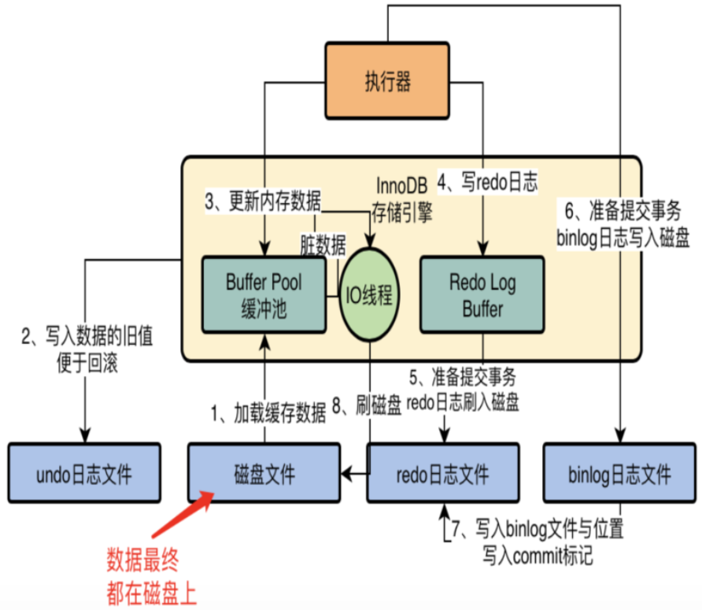
但是我们在对数据库执行增删改操作的时候，不可能直接更新磁盘上的数据的，因为如果你对磁盘进行随机读写操作，那速度是相当的慢，随便一个大磁盘文件的随机读写操作，可能都要几百毫秒。如果要是那么搞的话，可能你的数据库每秒也就只能处理几百个请求了！ 在对数据库执行增删改操作的时候，实际上主要都是针对内存里的Buffer Pool中的数据进行的，也就是实际上主要是对数据库的内存里的数据结构进行了增删改，如下图所示
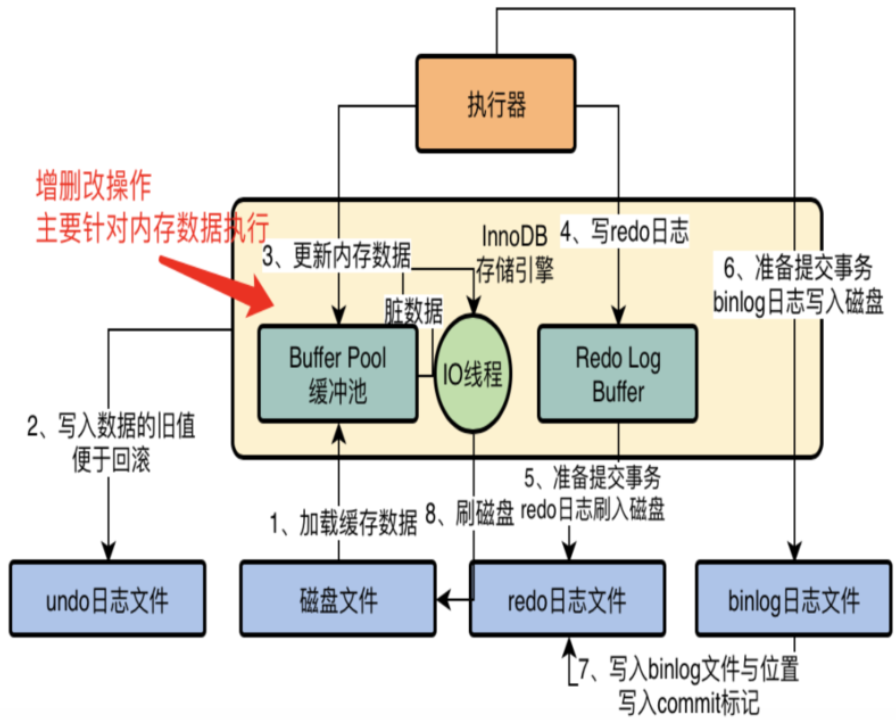
其实每个人都担心一个事，就是你在数据库的内存里执行了一堆增删改的操作，内存数据是更新了，但是这个时候如果数据库突然崩溃了，那么内存里更新好的数据不是都没了吗？ MySQL就怕这个问题，所以引入了一个redo log机制，你在对内存里的数据进行增删改的时候，他同时会把增删改对应的日志写入redo log中，如下图
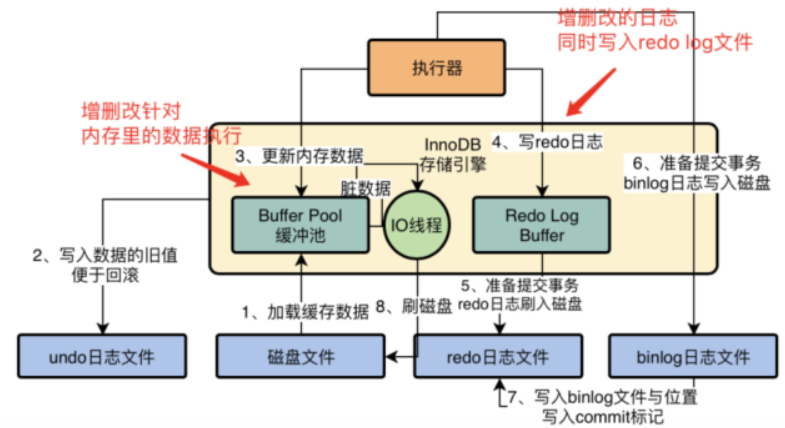
万一你的数据库突然崩溃了，没关系，只要从redo log日志文件里读取出来你之前做过哪些增删改操作，瞬间就可以重新把这些增删改操作在你的内存里执行一遍，这就可以恢复出来你之前做过哪些增删改操作了。 当然对于数据更新的过程，他是有一套严密的步骤的，还涉及到undo log、binlog、提交事务、buffer pool脏数据刷回磁盘，等等。
Buffer Pool就是数据库的一个内存组件，里面缓存了磁盘上的真实数据，然后我们的系统对数据库执行的增删改操作，其实主要就是对这个内存数据结构中的缓存数据执行的。通过这种方式，保证每个更新请求，尽量就是只更新内存，然后往磁盘顺序写日志文件。
更新内存的性能是极高的，然后顺序写磁盘上的日志文件的性能也是比较高的，因为顺序写磁盘文件，他的性能要远高于随机读写磁盘文件。
2. buffer pool的工作流程
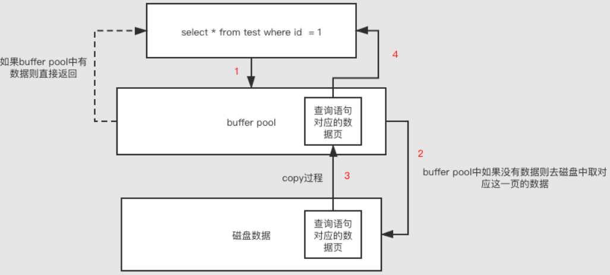
咱们以查询语句为例
1:在查询的时候会先去buffer pool(内存)中看看有没有对应的数据页，如果有的话直接返回
2:如果buffer pool中没有对应的数据页，则会去磁盘中查找，磁盘中如果找到了对应的数据，则会把该页的数据直接copy一份到buffer pool中返回给客户端
3:下次有同样的查询进来直接查找buffer pool找到对应的数据返回即可。
大家看到这里相信应该对buffer pool有了个大概的认识，有没有感觉有点缓存的感觉，当然buffer pool可没有缓存那么简单，内部结构还是比较复杂的，不过没关系，咱们继续往下看。
3. buffer pool缓冲池和查询缓存(query cache)
在正式讲解buffer pool 之前，我们先搞清楚buffer pool缓冲池和查询缓存(query cache)简称Qcache的区别。
如果将Mysql分为Server层和存储引擎层两大部分，那么Qcache位于Server层，Buffer Pool位于存储引擎层。
如果你的Mysql 查询缓存功能是打开的，那么当一个sql进入Mysql Server之后，Mysql Server首先会从查询缓存中查看是否曾经执行过这个SQL，如果曾经执行过的话，曾经执行的查询结果之前会以key-value的形式
保存在查询缓存中。key是sql语句，value是查询结果。我们将这个过程称为查询缓存！
如果查询缓存中没有你要找的数据的话，MySQL才会执行后续的逻辑，通过存储引擎将数据检索出来。并且查询缓存会被shared cache for sessions，是的，它会被所有的session共享。
MySQL查询缓存是查询结果缓存。它将以SEL开头的查询与哈希表进行比较，如果匹配，则返回上一次查询的结果。进行匹配时，查询必须逐字节匹配，例如 SELECT * FROM t1; 不等于select * from t1;，此外，一些不确定的查询结果无法被缓存，任何对表的修改都会导致这些表的所有缓存无效(只要有一个sql update了该表，那么表的查询缓存就会失效)。因此，适用于查询缓存的最理想的方案是只读，特别是需要检查数百万行后仅返回数行的复杂查询。如果你的查询符合这样一个特点，开启查询缓存会提升你的查询性能。
MySQL查询缓存的目的是为了提升查询性能，但它本身也是有性能开销的。需要在合适的业务场景下（读写压力模型）使用，不合适的业务场景不但不能提升查询性能，查询缓存反而会变成MySQL的瓶颈。
查询缓存的开销主要有：
- 读查询在开始前必须先检查是否命中缓存；
- 如果这个读查询可以被缓存，那么当完成执行后，MySQL若发现查询缓存中没有这个查询，会将其结果存入查询缓存，这会带来额外的系统消耗；
- 当向某个表写入数据的时候，MySQL必须将对应表的所有缓存都设置失效。如果查询缓存非常大或者碎片很多，这个操作就可能带来很大的系统消耗。
查询缓存的缺点：
首先，查询缓存的效果取决于缓存的命中率，只有命中缓存的查询效果才能有改善，因此无法预测其性能。只要有一个sql update了该表，那么表的查询缓存就会失效，所以当你的业务对表CRUD的比例不相上下，那么查询缓存may be会影响应用的吞吐效率。
其次，查询缓存的另一个大问题是它受到单个互斥锁的保护。在具有多个内核的服务器上，大量查询会导致大量的互斥锁争用。
在mysql8.0的版本中，已经将查询缓存模块删除了。
二、buffer pool的内存数据结构
1. 数据页概念
我们先了解一下数据页这个概念。它是 MySQL 抽象出来的数据单位，磁盘文件中就是存放了很多数据页，每个数据页里存放了很多行数据。
默认情况下，数据页的大小是 16kb。
所以对应的，在 Buffer Pool 中，也是以数据页为数据单位，存放着很多数据。但是我们通常叫做缓存页，因为 Buffer Pool 毕竟是一个缓冲池，并且里面的数据都是从磁盘文件中缓存到内存中。
所以，默认情况下缓存页的大小也是 16kb，因为它和磁盘文件中数据页是一一对应的。
所以，缓冲池和磁盘之间的数据交换的单位是数据页，Buffer Pool中存放的是一个一个的数据页。
假设我们要更新一行数据，此时数据库会找到这行数据所在的数据页，然后从磁盘文件里把这行数据所在的数据页直接给加载到Buffer Pool里去。如下图。
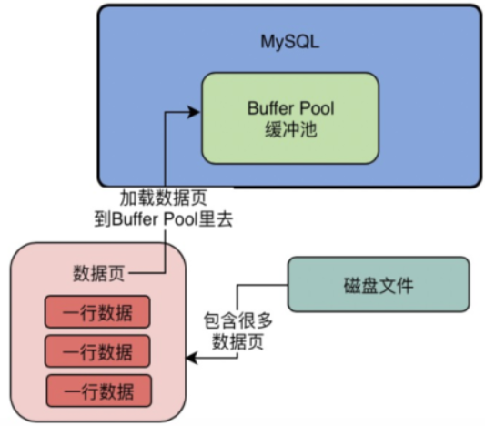
2. 那么怎么识别数据在哪个缓存页中
每个缓存页都会对应着一个描述数据块，里面包含数据页所属的表空间、数据页的编号，缓存页在 Buffer Pool 中的地址等等。
描述数据块本身也是一块数据，它的大小大概是缓存页大小的5%左右，大概800个字节左右的大小。然后假设你设置的buffer pool大小是128MB，实际上Buffer Pool真正的最终大小会超出一些，可能有个130多MB的样子，因为他里面还要存放每个缓存页的描述数据。
在Buffer Pool中，每个缓存页的描述数据放在最前面，然后各个缓存页放在后面。所以此时我们看下面的图，Buffer Pool实际看起来大概长这个样子 。
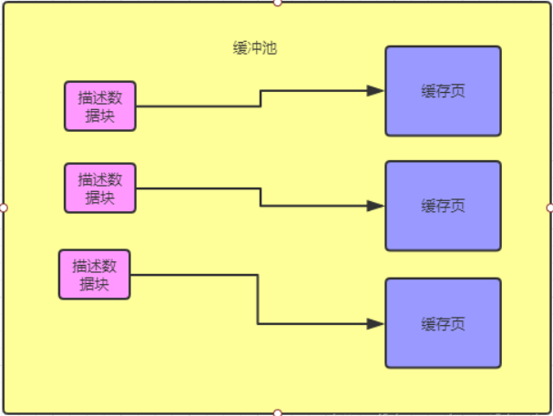
3. buffer pool的初始化与配置
MySQL 启动时，是如何初始化 Buffer Pool 的呢？
1、MySQL 启动时，会根据参数 innodb_buffer_pool_size 的值来为 Buffer Pool 分配内存区域。
2、然后会按照缓存页的默认大小 16k 以及对应的描述数据块的 800个字节 左右大小，在 Buffer Pool 中划分中一个个的缓存页和一个个的描述数据库块。
3、注意，此时的缓存页和描述数据块都是空的，毕竟才刚启动 MySQL 呢。
buffer pool的配置
buffer pool通常由数个内存块加上一组控制结构体对象组成。内存块的个数取决于buffer pool instance的个数，不过在5.7版本中开始默认以128M(可配置)的chunk单位分配内存块，这样做的目的是为了支持buffer pool的在线动态调整大小。
Buffer Pool默认情况下是128MB，还是有一点偏小了，我们实际生产环境下完全可以对Buffer Pool进行调整。 比如我们的数据库如果是16核32G的机器，那么你就可以给Buffer Pool分配个2GB的内存。
1、innodb_buffer_pool_size：这个值是设置 InnoDB Buffer Pool 的总大小；
2、innodb_buffer_pool_chunk_size：当增加或减少innodb_buffer_pool_size时，操作以块（chunk）形式执行。块大小由innodb_buffer_pool_chunk_size配置选项定义，默认值128M。
这里面有个关系要确定一下，最好按照这个设置 innodb_buffer_pool_size=innodb_buffer_pool_chunk_size * innodb_buffer_pool_instances*N（N>=1）;
3、innodb_buffer_pool_instances：设置 InnoDB Buffer Pool 实例的个数，每一个实例都有自己独立的 list 管理Buffer Pool；
当buffer pool比较大的时候（超过1G），innodb会把buffer pool划分成几个instances，这样可以提高读写操作的并发，减少竞争。读写page都使用hash函数分配给一个instances。
当增加或者减少buffer pool大小的时候，实际上是操作的chunk。buffer pool的大小必须是innodb_buffer_pool_chunk_sizeinnodb_buffer_pool_instances的整数倍，如果配置的innodb_buffer_pool_size不是innodb_buffer_pool_chunk_sizeinnodb_buffer_pool_instances的倍数，buffer pool的大小会自动调整为innodb_buffer_pool_chunk_size*innodb_buffer_pool_instances的倍数，自动调整的值不少于指定的值。
如果指定的buffer大小是9G，instances的个数是16，chunk默认的大小是128M，那么buffer会自动调整为10G。
4、innodb_old_blocks_pct：默认 InnoDB Buffer Pool 中点的位置，默认值是37，最大100，也就是我们所谓的3/8的位置，可以自己设置。
1）Buffer Pool Size 设置和生效过程
理想情况下，在给服务器的其他进程留下足够的内存空间的情况下，Buffer Pool Size 应该设置的尽可能大。当 Buffer Pool Size 设置的足够大时，整个数据库就相当于存储在内存当中，当读取一次数据到 Buffer Pool Size 以后，后续的读操作就不用再访问磁盘。
下面我们看一下 Buffer Pool Size 的设置方式：
当数据库已经启动的情况下，我们可以通过在线调整的方式修改 Buffer Pool Size 的大小。通过以下语句：
1 | SET GLOBAL innodb_buffer_pool_size=402653184; |
当执行这个语句以后，并不会立即生效，而是要等所有的事务全部执行成功以后才会生效；新的连接和事务必须等其他事务完全执行成功以后，Buffer Pool Size 设置生效以后才能够连接成功，不然会一直处于等待状态。
期间，Buffer Pool Size 要完成碎片整理，去除缓存 page 等等操作。在执行增加或者减少 Buffer Pool Size 的操作时，操作会作为一个执行块执行，innodb_buffer_pool_chunk_size 的大小会定义一个执行块的大小，默认的情况下，这个值是128M。
Buffer Pool Size 的大小最好设置为 innodb_buffer_pool_chunk_size innodb_buffer_pool_instances 的整数倍，而且是大于等于1。
如果你的机器配置的大小不是整数倍的话，Buffer Pool Size 的大小是会自适应修改为 innodb_buffer_pool_chunk_sizeinnodb_buffer_pool_instances 的整数倍，会略小于你配置的 Buffer Pool Size 的大小。
比如以8G为例：
mysqld –innodb_buffer_pool_size=8G –innodb_buffer_pool_instances=16，然后innodb_buffer_pool_instances=16 的大小刚好设置为16，是一个整数倍的关系。而且innodb_buffer_pool_chunk_size 的大小也是可以在my.cnf里面指定的。
还有一种情况是 innodb_buffer_pool_chunk_size * innodb_buffer_pool_instances 大于 buffer pool size 的情况下，innodb_buffer_pool_chunk_size 也会自适应为 Buffer Pool size/innodb_buffer_pool_instances，可见MySQL 的管理还是非常的智能的。
如果我们要查 Buffer Pool 的状态的话：
1 | SHOW STATUS WHERE Variable_name='InnoDB_buffer_pool_resize_status' |
可以帮我们查看到状态。我们可以看一下增加 Buffer Pool 的时候的一个过程，再看一下减少的时候的日志，其实还是很好理解的，我们可以看成每次增大或者减少 Buffer Pool 的时候就是进行 innodb_buffer_pool_chunk 的增加或者释放，按照 innodb_buffer_pool_chunk_size 设定值的大小增加或者释放执行块。
增加的过程：增加执行块，指定新地址，将新加入的执行块加入到 free list（控制执行块的一个列表，可以这么理解）。
减少的过程：重新整理 Buffer Pool 和空闲页，将数据从块中移除，指定新地址。
2）Buffer Pool Instances
在64位操作系统的情况下，可以拆分缓冲池成多个部分，这样可以在高并发的情况下最大可能的减少争用。下面我们看一下怎么配置 Buffer Pool Instances？
配置多个 Buffer Pool Instances 能在很大程度上能够提高 MySQL 在高并发的情况下处理事物的性能，优化不同连接读取缓冲页的争用。
我们可以通过设置 innodb_buffer_pool_instances 来设置 Buffer Pool Instances。当 InnoDB Buffer Pool 足够大的时候，你能够从内存中读取时候能有一个较好的性能，但是也有可能碰到多个线程同时请求缓冲池的瓶颈。这个时候设置多个 Buffer Pool Instances 能够尽量减少连接的争用。
这能够保证每次从内存读取的页都对应一个 Buffer Pool Instances，而且这种对应关系是一个随机的关系。并不是热数据存放在一个 Buffer Pool Instances下，内部也是通过 hash 算法来实现这个随机数的。每一个 Buffer Pool Instances 都有自己的 free lists，LRU 和其他的一些 Buffer Poll 的数据结构，各个 Buffer Pool Instances 是相对独立的。
innodb_buffer_pool_instances 的设置必须大于1才算得上是多配置，但是这个功能起作用的前提是innodb_buffer_pool_size 的大小必须大于1G，理想情况下 innodb_buffer_pool_instances 的每一个 instance 都保证在1G以上。
3）SHOW ENGINE INNODB STATUS
当你的数据库启动之后，你随时可以通过上述命令，去查看当前innodb里的一些具体情况，执行SHOW ENGINE INNODB STATUS就可以了。此时你可能会看到如下一系列的东西：
1 | Total memory allocated xxxx; |
下面解释一下这里的东西，主要讲解这里跟buffer pool相关的一些东西。
- Total memory allocated，这就是说buffer pool最终的总大小是多少
- Buffer pool size，这就是说buffer pool一共能容纳多少个缓存页
- Free buffers，这就是说free链表中一共有多少个空闲的缓存页是可用的
- Database pages和Old database pages，就是说lru链表中一共有多少个缓存页，以及冷数据区域里的缓存页数量
- Modified db pages，这就是flush链表中的缓存页数量
- Pending reads和Pending writes，等待从磁盘上加载进缓存页的数量，还有就是即将从lru链表中刷入磁盘的数量、即将从flush链表中刷入磁盘的数量
- Pages made young和not young，这就是说已经lru冷数据区域里访问之后转移到热数据区域的缓存页的数 量，以及在lru冷数据区域里1s内被访问了没进入热数据区域的缓存页的数量
- youngs/s和not youngs/s，这就是说每秒从冷数据区域进入热数据区域的缓存页的数量，以及每秒在冷数据区域里被访问了但是不能进入热数据区域的缓存页的数量
- Pages read xxxx, created xxx, written xxx，xx reads/s, xx creates/s, 1xx writes/s，这里就是说已经读取、创建和写入了多少个缓存页，以及每秒钟读取、创建和写入的缓存页数量
- Buffer pool hit rate xxx / 1000，这就是说每1000次访问，有多少次是直接命中了buffer pool里的缓存的
- young-making rate xxx / 1000 not xx / 1000，每1000次访问，有多少次访问让缓存页从冷数据区域移动到了热数据区域，以及没移动的缓存页数量
- LRU len：这就是lru链表里的缓存页的数量
- I/O sum：最近50s读取磁盘页的总数
- I/O cur：现在正在读取磁盘页的数量
三、buffer pool的空间管理
缓冲池也是有大小限制的，那么既然缓冲池有大小限制的，每次都读入的数据页怎么来管理呢？这里我们来聊聊缓冲池的空间管理，其实对缓冲池进行管理的关键部分是如何安排进池的数据并且按照一定的策略淘汰池中的数据，保证池中的数据不“溢出”，同时还能保证常用数据留在池子中。
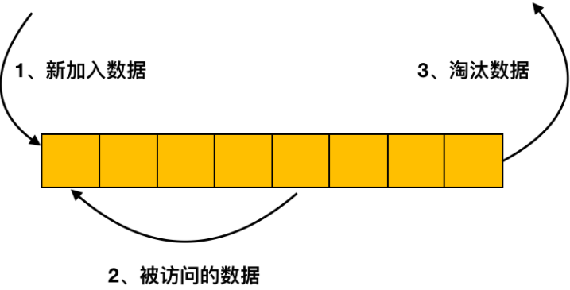
1. 传统 LRU 淘汰法
缓冲池是基于传统的 LRU 方法来进行缓存页管理的，我们先来看下如果使用 LRU 是如何管理的。
LRU，全称是 Least Recently Used，中文名字叫作「最近最少使用」。从名字上就很容易理解了。
这里分两种情况：
1）缓存页已在缓冲池中
这种情况下会将对应的缓存页放到 LRU 链表的头部，无需从磁盘再进行读取，也无需淘汰其它缓存页。
如下图所示，如果要访问的数据在 6 号页中，则将 6 号页放到链表头部即可，这种情况下没有缓存页被淘汰。
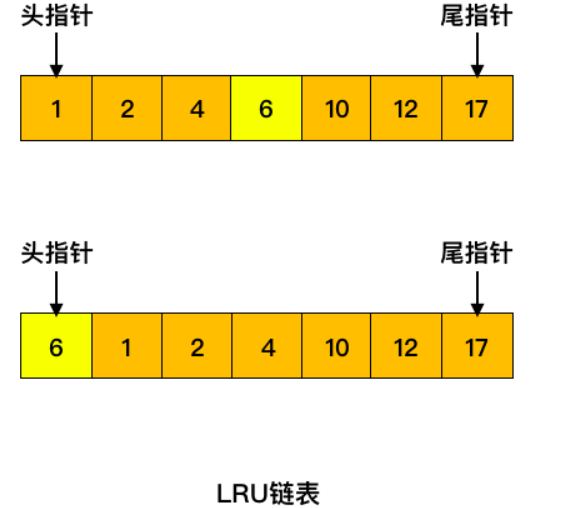
2）缓存页不在缓冲池中
缓存页不在缓冲中，这时候就需要从磁盘中读入对应的数据页，将其放置在链表头部，同时淘汰掉末尾的缓存页
如下图所示，如果要访问的数据在 60 号页中，60 号页不在缓冲池中，此时加载进来放到链表的头部，同时淘汰掉末尾的 17 号缓存页。
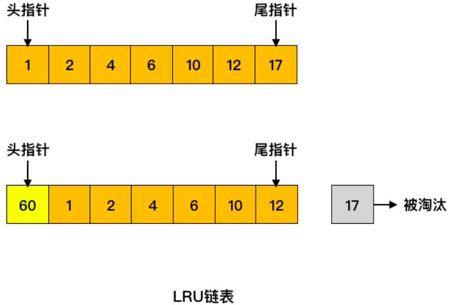
是不是看上去很简单，同时也能满足缓冲池淘汰缓存页的方法？但是我们来思考几个问题：
预读失效
上面我们提到了缓冲池的预读机制可能会预先加载相邻的数据页。假如加载了 20、21 相邻的两个数据页，如果只有页号为 20 的缓存页被访问了，而另一个缓存页却没有被访问。此时两个缓存页都在链表的头部，但是为了加载这两个缓存页却淘汰了末尾的缓存页，而被淘汰的缓存页却是经常被访问的。这种情况就是预读失效，被预先加载进缓冲池的页，并没有被访问到，这种情况是不是很不合理。
缓冲池污染
还有一种情况是当执行一条 SQL 语句时，如果扫描了大量数据或是进行了全表扫描，此时缓冲池中就会加载大量的数据页，从而将缓冲池中已存在的所有页替换出去，这种情况同样是不合理的。这就是缓冲池污染，并且还会导致 MySQL 性能急剧下降。
2. 冷热数据分离
这样看来，传统的 LRU 方法并不能满足缓冲池的空间管理。因此，Msyql 基于 LRU 设计了冷热数据分离的处理方案。
也就是将 LRU 链表分为两部分，一部分为热数据区域，一部分为冷数据区域。
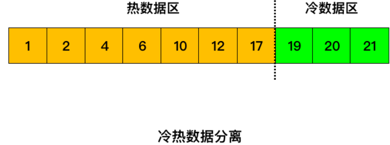
当数据页第一次被加载到缓冲池中的时候，先将其放到冷数据区域的链表头部，1s（由 innodb_old_blocks_time 参数控制） 后该缓存页被访问了再将其移至热数据区域的链表头部。
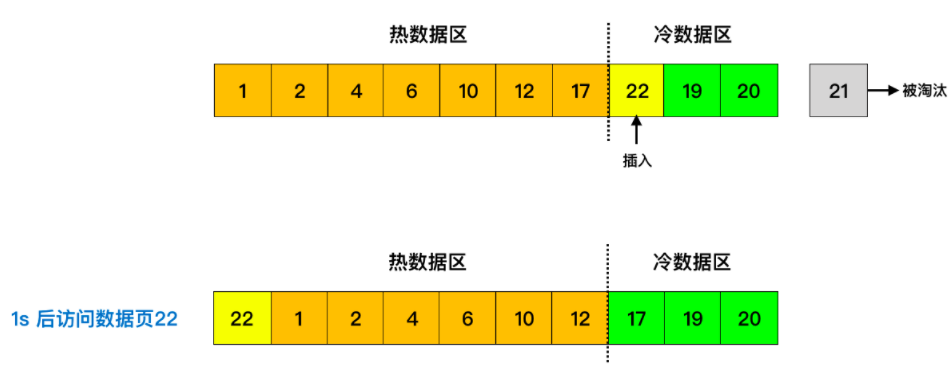
可能你会有疑惑了，为什么要等 1s 后才将其移至热数据区域呢？你想想，如果数据页刚被加载到冷数据区就被访问了，之后再也不访问它了呢？这不就造成热数据区的浪费了吗？要是 1s 后不访问了，说明之后可能也不会去频繁访问它，也就没有移至热缓冲区的必要了。当缓存页不够的时候，从冷数据区淘汰它们就行了。
另一种情况，当我的数据页已经在热缓冲区了，是不是缓存页只要被访问了就将其插到链表头部呢？不用我说你肯定也觉得不合理。热数据区域里的缓存页是会被经常访问的，如果每访问一个缓存页就插入一次链表头，那整个热缓冲区里就异常骚动了，你想想那个画面。
那咋整呢？Mysql 中优化为热数据区的后 3/4 部分被访问后才将其移动到链表头部去，对于前 1/4 部分的缓存页被访问了不会进行移动。
四、Buffer Pool 预读机制
预读是mysql提高性能的一个重要的特性。预读就是 IO 异步读取多个页数据读入 Buffer Pool 的一个过程，并且这些页被认为是很快就会被读取到的。InnoDB使用两种预读算法来提高I/O性能：线性预读（linear read-ahead）和随机预读（randomread-ahead）
为了区分这两种预读的方式，我们可以把线性预读放到以extent为单位，而随机预读放到以extent中的page为单位。线性预读着眼于将下一个extent提前读取到buffer pool中，而随机预读着眼于将当前extent中的剩余的page提前读取到buffer pool中。
1. Linear线性预读
线性预读的单位是extend，一个extend中有64个page。线性预读的一个重要参数是innodb_read_ahead_threshold，是指在连续访问多少个页面之后，把下一个extend读入到buffer pool中，不过预读是一个异步的操作。当然这个参数不能超过64，因为一个extend最多只有64个页面。
例如，innodb_read_ahead_threshold = 56，就是指在连续访问了一个extend的56个页面之后把下一个extend读入到buffer pool中。在添加此参数之前，InnoDB仅计算当它在当前范围的最后一页中读取时是否为整个下一个范围发出异步预取请求。
2. Random随机预读
随机预读方式则是表示当同一个extent中的一些page在buffer pool中发现时，Innodb会将该extent中的剩余page一并读到buffer pool中。由于随机预读方式给innodb code带来了一些不必要的复杂性，同时在性能也存在不稳定性，在5.5中已经将这种预读方式废弃，默认是OFF。若要启用此功能，即将配置变量设置innodb_random_read_ahead为ON。
五、Buffer Pool的三种Page和链表
Buffer Pool 是Innodb 内存中的的一块占比较大的区域，用来缓存表和索引数据。众所周知，从内存访问会比从磁盘访问快很多。为了提高数据的读取速度，Buffer Pool 会通过三种Page 和链表来管理这些经常访问的数据，保证热数据不被置换出Buffer Pool。
1. 三种Page
Free Page（空闲页）
表示此Page 未被使用，位于 Free 链表。
Clean Page（干净页）
此Page 已被使用，但是页面未发生修改，位于LRU 链表。
Dirty Page（脏页）
此Page 已被使用，页面已经被修改，其数据和磁盘上的数据已经不一致。当脏页上的数据写入磁盘后，内存数据和磁盘数据一致，那么该Page 就变成了干净页。脏页 同时存在于LRU 链表和Flush 链表。
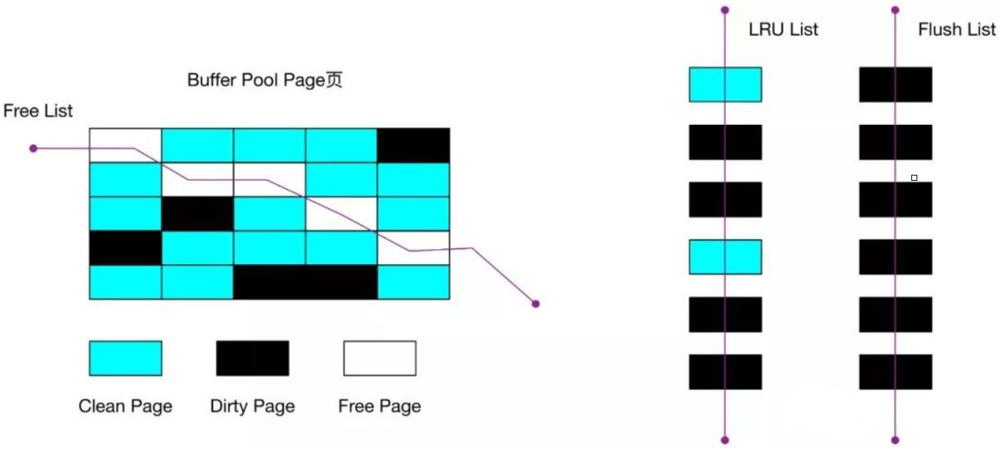
2. 三种链表
1）LRU 链表
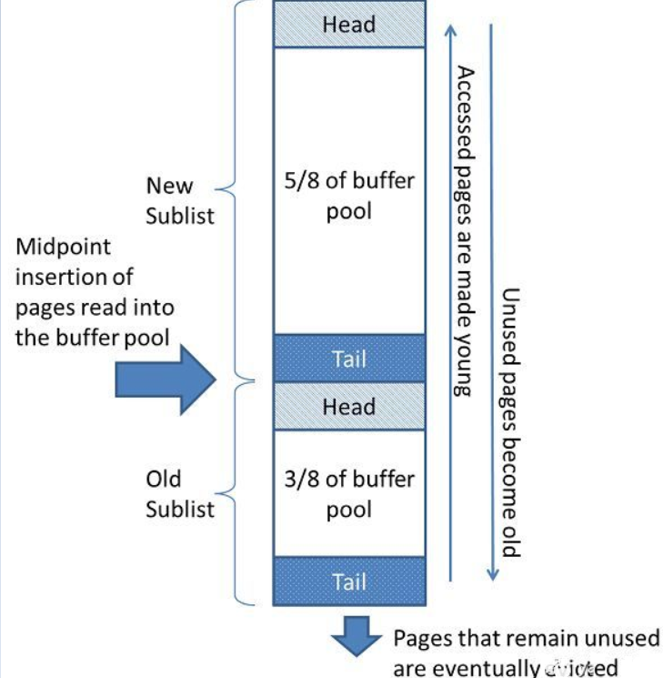
如上图所示，是Buffer Pool里面的LRU(least recently used)链表。LRU链表是被一种叫做最近最少使用的算法管理。
LRU链表被分成两部分，一部分是New Sublist(Young 链表)，用来存放经常被读取的页的地址，另外一部分是Old Sublist(Old 链表)，用来存放较少被使用的页面。每部分都有对应的头部 和尾部。
默认情况下
- Old 链表占整个LRU 链表的比例是3/8。该比例由innodb_old_blocks_pct控制，默认值是37（3/8*100）。该值取值范围为5~95，为全局动态变量。
- 当新的页被读取到Buffer Pool里面的时候，和传统的LRU算法插入到LRU链表头部不同，Innodb LRU算法是将新的页面插入到Yong 链表的尾部和Old 链表的头部中间的位置，这个位置叫做Mid Point，如上图所示。
- 频繁访问一个Buffer Pool的页面，会促使页面往Young链表的头部移动。如果一个Page在被读到Buffer Pool后很快就被访问，那么该Page会往Young List的头部移动，但是如果一个页面是通过预读的方式读到Buffer Pool，且之后短时间内没有被访问，那么很可能在下次访问之前就被移动到Old List的尾部，而被驱逐了。
- 随着数据库的持续运行，新的页面被不断的插入到LRU链表的Mid Point，Old 链表里的页面会逐渐的被移动Old链表的尾部。同时，当经常被访问的页面移动到LRU链表头部的时候，那些没有被访问的页面会逐渐的被移动到链表的尾部。最终，位于Old 链表尾部的页面将被驱逐。
如果一个数据页已经处于Young 链表，当它再次被访问的时候，只有当其处于Young 链表长度的1/4(大约值)之后，才会被移动到Young 链表的头部。这样做的目的是减少对LRU 链表的修改，因为LRU 链表的目标是保证经常被访问的数据页不会被驱逐出去。
innodb_old_blocks_time 控制的Old 链表头部页面的转移策略。该Page需要在Old 链表停留超过innodb_old_blocks_time 时间，之后再次被访问，才会移动到Young 链表。这么操作是避免Young 链表被那些只在innodb_old_blocks_time时间间隔内频繁访问，之后就不被访问的页面塞满，从而有效的保护Young 链表。
在全表扫描或者全索引扫描的时候，Innodb会将大量的页面写入LRU 链表的Mid Point位置，并且只在短时间内访问几次之后就不再访问了。设置innodb_old_blocks_time的时间窗口可以有效的保护Young List，保证了真正的频繁访问的页面不被驱逐。
innodb_old_blocks_time 单位是毫秒，默认值是1000。调大该值提高了从Old链表移动到Young链表的难度，会促使更多页面被移动到Old 链表，老化，从而被驱逐。
当扫描的表很大，Buffer Pool都放不下时，可以将innodb_old_blocks_pct设置为较小的值，这样只读取一次的数据页就不会占据大部分的Buffer Pool。例如，设置innodb_old_blocks_pct = 5，会将仅读取一次的数据页在Buffer Pool的占用限制为5％。
当经常扫描一些小表时，这些页面在Buffer Pool移动的开销较小，我们可以适当的调大innodb_old_blocks_pct，例如设置innodb_old_blocks_pct = 50。
在SHOW ENGINE INNODB STATUS 里面提供了Buffer Pool一些监控指标，有几个我们需要关注一下：
- youngs/s：该指标表示的是每秒访问Old 链表中页面，使其移动到Young链表的次数。如果MySQL实例都是一些小事务，没有大表全扫描，且该指标很小，就需要调大innodb_old_blocks_pct 或者减小innodb_old_blocks_time，这样会使得Old List 的长度更长，Old页面被移动到Old List 的尾部消耗的时间会更久，那么就提升了下一次访问到Old List里面的页面的可能性。如果该指标很大，可以调小innodb_old_blocks_pct，同时调大innodb_old_blocks_time，保护热数据。
- non-youngs/s：该指标表示的是每秒访问Old 链表中页面，没有移动到Young链表的次数，因为其不符合innodb_old_blocks_time。如果该指标很大，一般情况下是MySQL存在大量的全表扫描。如果MySQL存在大量全表扫描，且这个指标又不大的时候，需要调大innodb_old_blocks_time，因为这个指标不大意味着全表扫描的页面被移动到Young 链表了，调大innodb_old_blocks_time时间会使得这些短时间频繁访问的页面保留在Old 链表里面。
每隔1秒钟，Page Cleaner线程执行LRU List Flush的操作，来释放足够的Free Page。innodb_lru_scan_depth 变量控制每个Buffer Pool实例每次扫描LRU List的长度，来寻找对应的脏页，执行Flush操作。
2）Flush 链表
- Flush 链表里面保存的都是脏页，也会存在于LRU 链表。
- Flush 链表是按照oldest_modification排序，值大的在头部，值小的在尾部
- 当有页面访被修改的时候，使用mini-transaction，对应的page进入Flush 链表
- 如果当前页面已经是脏页，就不需要再次加入Flush list，否则是第一次修改，需要加入Flush 链表
- 当Page Cleaner线程执行flush操作的时候，从尾部开始scan，将一定的脏页写入磁盘，推进检查点，减少recover的时间
SQL 的增删改查都在 Buffer Pool 中执行，慢慢地，Buffer Pool 中的缓存页因为不断被修改而导致和磁盘文件中的数据不一致了，也就是 Buffer Pool 中会有很多个脏页，脏页里面很多脏数据。
所以，MySQL 会有一条后台线程，定时地将 Buffer Pool 中的脏页刷回到磁盘文件中。
但是，后台线程怎么知道哪些缓存页是脏页呢，不可能将全部的缓存页都往磁盘中刷吧，这会导致 MySQL 暂停一段时间。
MySQL 是怎么判断脏页的
我们引入一个和 free 链表类似的 flush 链表。他的本质也是通过缓存页的描述数据块中的两个指针，让修改过的缓存页的描述数据块能串成一个双向链表，这两指针大家可以认为是 flush_pre 指针和 flush_next 指针。
下面我用伪代码来描述一下：
1 | DescriptionDataBlock{ |
flush 链表也有对应的基础节点，也是包含链表的头节点和尾节点，还有就是修改过的缓存页的数量。
1 | FlushListBaseNode{ |
到这里，我们都知道，SQL 的增删改都会使得缓存页变为脏页，此时会修改脏页对应的描述数据块的 flush_pre 指针和 flush_next 指针，使得描述数据块加入到 flush 链表中，之后 MySQL 的后台线程就可以将这个脏页刷回到磁盘中。
3）Free 链表
- Free 链表 存放的是空闲页面，初始化的时候申请一定数量的页面，当 MySQL 启动后，会不断地有 SQL 请求进来，此时空先的缓存页就会不断地被使用。
- 在执行SQL的过程中，每次成功load 页面到内存后，会判断Free 链表的页面是否够用。如果不够用的话，就flush LRU 链表和Flush 链表来释放空闲页。如果够用，就从Free 链表里面删除对应的页面，在LRU 链表增加页面，保持总数不变。
Free 链表的使用原理
free 链表，它是一个双向链表，链表的每个节点就是一个个空闲的缓存页对应的描述数据块。
他本身其实就是由 Buffer Pool 里的描述数据块组成的，你可以认为是每个描述数据块里都有两个指针，一个是 free_pre 指针，一个是 free_next 指针，分别指向自己的上一个 free 链表的节点，以及下一个 free 链表的节点。
通过 Buffer Pool 中的描述数据块的 free_pre 和 free_next 两个指针，就可以把所有的描述数据块串成一个 free 链表。
下面我们可以用伪代码来描述一下 free 链表中描述数据块节点的数据结构：
1 | DescriptionDataBlock{ |
free 链表有一个基础节点，他会引用链表的头节点和尾节点，里面还存储了链表中有多少个描述数据块的节点，也就是有多少个空闲的缓存页。
下面我们也用伪代码来描述一下基础节点的数据结构：
1 | FreeListBaseNode{ |
到此，free 链表就介绍完了。上面我们也介绍了 MySQL 启动时 Buffer Pool 的初始流程，接下来，我会将结合刚介绍完的 free 链表，讲解一下 SQL 进来时，磁盘数据页读取到 Buffer Pool 的缓存页的过程。但是，我们先要了解一下一个新概念：数据页缓存哈希表，它的 key 是表空间+数据页号，而 value 是对应缓存页的地址。
描述如图所示：
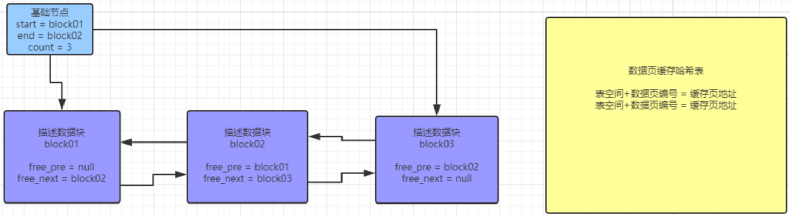
磁盘数据页读取到 Buffer Pool 的缓存页的过程
- 首先，SQL 进来时，判断数据对应的数据页能否在 数据页缓存哈希表里 找到对应的缓存页。
- 如果找到，将直接在
Buffer Pool中进行增删改查。 - 如果找不到，则从 free 链表中找到一个空闲的缓存页，然后从磁盘文件中读取对应的数据页的数据到缓存页中，并且将数据页的信息和缓存页的地址写入到对应的描述数据块中，然后修改相关的描述数据块的 free_pre 指针和 free_next 指针，将使用了的描述数据块从 free 链表中移除。记得，还要在数据页缓存哈希表中写入对应的 key-value 对。最后也是在
Buffer Pool中进行增删改查。
3. LRU 链表和Flush链表的区别
- LRU 链表 flush，由用户线程触发(MySQL 5.6.2之前)；而Flush 链表 flush由MySQL数据库InnoDB存储引擎后台srv_master线程处理。(在MySQL 5.6.2之后，都被迁移到Page Cleaner线程中)。
- LRU 链表 flush，其目的是为了写出LRU 链表尾部的脏页，释放足够的空闲页，当Buffer Pool满的时候，用户可以立即获得空闲页面，而不需要长时间等待；Flush 链表 flush，其目的是推进Checkpoint LSN，使得InnoDB系统崩溃之后能够快速的恢复。
- LRU 链表 flush，其写出的脏页，需要从LRU链表中删除，移动到Free 链表。Flush List flush，不需要移动page在LRU链表中的位置。
- LRU 链表 flush，每次flush的脏页数量较少，基本固定，只要释放一定的空闲页即可；Flush 链表 flush，根据当前系统的更新繁忙程度，动态调整一次flush的脏页数量，量很大。
- 在Flush 链表上的页面一定在LRU 链表上，反之则不成立。
4. 触发刷脏页的条件
- REDO日志快用满的时候。由于MySQL更新是先写REDO日志，后面再将数据Flush到磁盘，如果REDO日志对应脏数据还没有刷新到磁盘就被覆盖的话，万一发生Crash，数据就无法恢复了。此时会从Flush 链表里面选取脏页，进行Flush。
- 为了保证MySQL中的空闲页面的数量，Page Cleaner线程会从LRU 链表尾部淘汰一部分页面作为空闲页。如果对应的页面是脏页的话，就需要先将页面Flush到磁盘。
- MySQL中脏页太多的时候。innodb_max_dirty_pages_pct 表示的是Buffer Pool最大的脏页比例，默认值是75%，当脏页比例大于这个值时会强制进行刷脏页，保证系统有足够可用的Free Page。innodb_max_dirty_pages_pct_lwm参数控制的是脏页比例的低水位，当达到该参数设定的时候，会进行preflush，避免比例达到innodb_max_dirty_pages_pct 来强制Flush，对MySQL实例产生影响。
- MySQL实例正常关闭的时候，也会触发MySQL把内存里面的脏页全部刷新到磁盘。
Innodb 的策略是在运行过程中尽可能的多占用内存，因此未被使用的页面会很少。当我们读取的数据不在Buffer Pool里面时，就需要申请一个空闲页来存放。如果没有足够的空闲页时，就必须从LRU 链表的尾部淘汰页面。如果该页面是干净的，可以直接拿来用，如果是脏页，就需要进行刷脏操作，将内存数据Flush到磁盘。
所以，如果出现以下情况，是很容易影响MySQL实例的性能：
- 一个SQL查询的数据页需要淘汰的页面过多
- 实例是个写多型的MySQL，checkpoint跟不上日志产生量，会导致更新全部堵塞，TPS跌0。
innodb_io_capacity 参数定义了Innodb 后台任务的IO能力，例如刷脏操作还有Change Buffer的merge操作等。
Innodb 的三种Page和链表的设计，保证了我们需要的热数据常驻在内存，及时淘汰不需要的数据，提升了我们的查询速度，同时不同的刷脏策略也提高了我们的恢复速度，保证了数据安全。